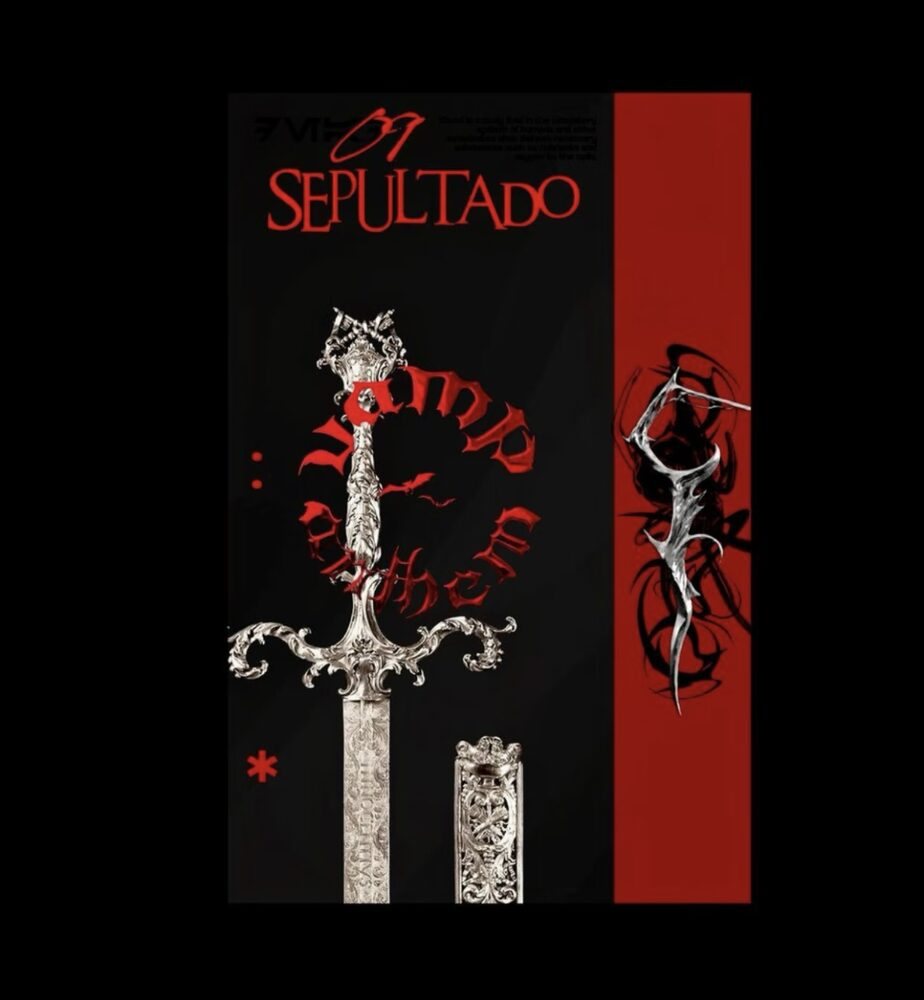
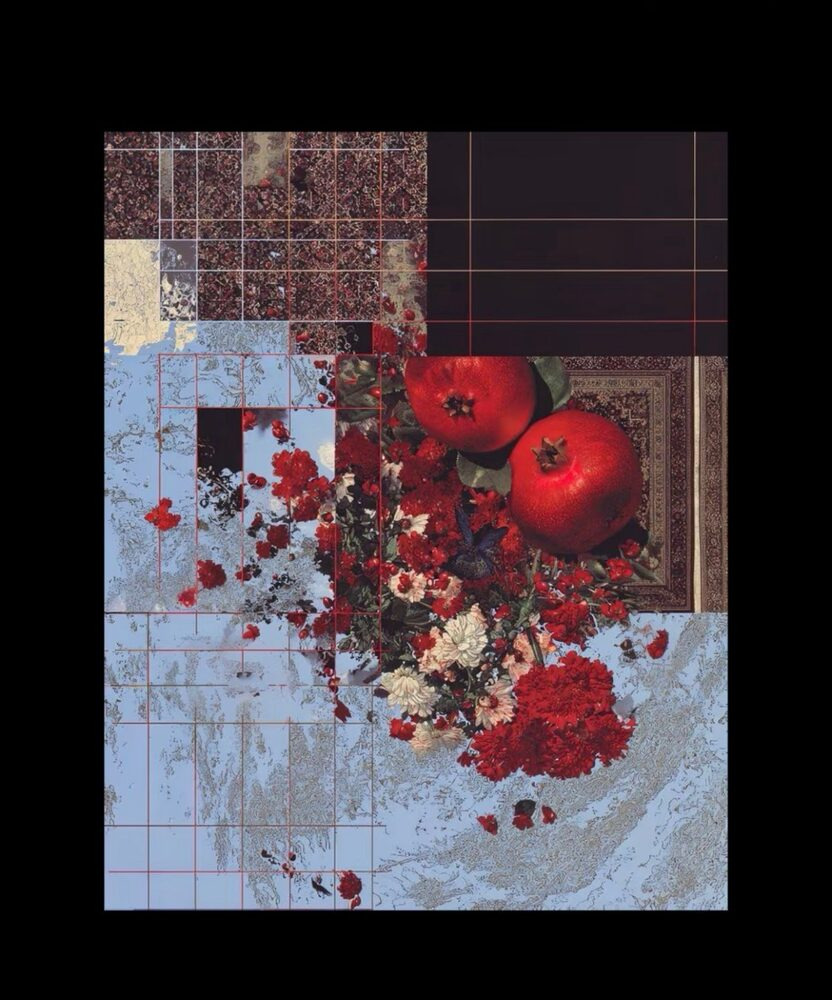
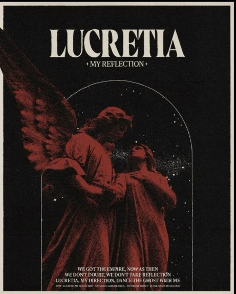
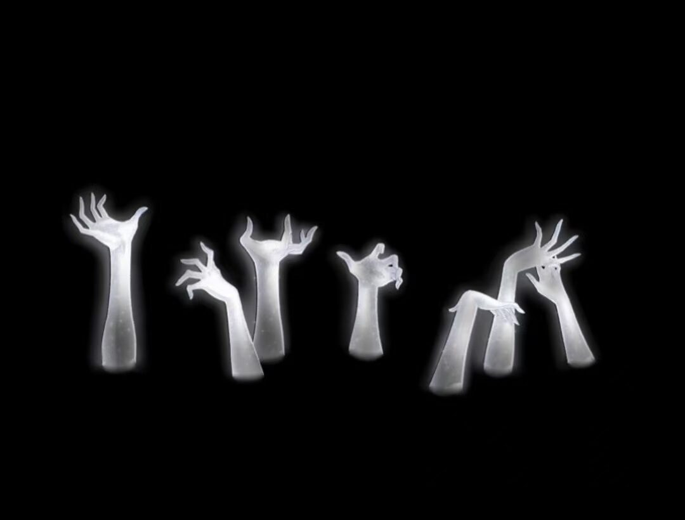

04 Index · 碎片索引
细数我的罪 …
双击任意碎片选中，再点击另一块 · 红线即连成（可任意多重连接 · 点 ↗ 打开详情）
[ 01* ]
羽 ↗Feather
飞鸟衔走名字。
[ 02* ]

骨 ↗Bone 骨架替我记着姿势。 [ 03* ]
血 ↗Blood 它只流向你的膝。 [ 04* ]
神 ↗Deity 石也会流血。羽骨血神

…虐杀我的灵魂…
..End..
†